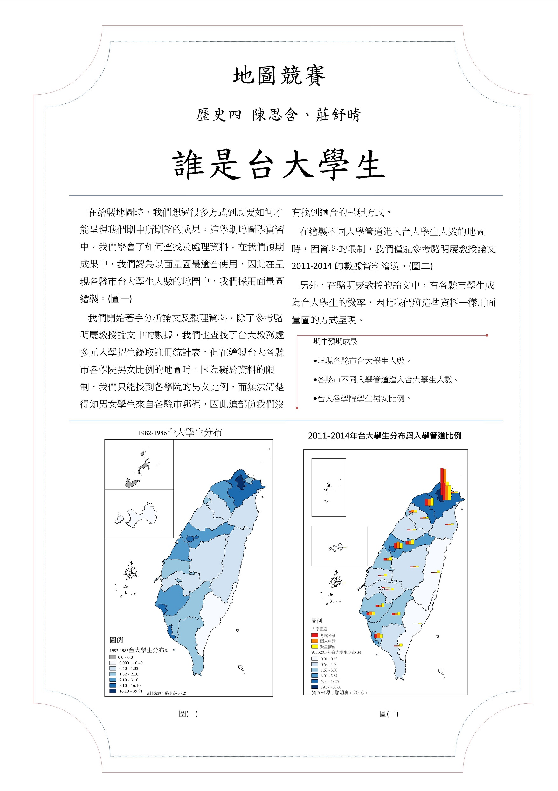

誰是台大學生？
作者介紹
歷史四
莊舒晴
歷史四
陳思含
-
入學管道和高中大學生息息相關，
享有較多資源的直轄市真的入學人數差很多，而視覺化的資料比起表格更有衝擊力多了。
——工管四 張馨文
地圖海報

網路地圖
主題說明
-
在繪製地圖時，我們想過很多方式到底要如何才能呈現我們期中所期望的成果。
這學期地圖學實習中，我們學會了如何查找及處理資料。在我們預期成果中，
我們認為以面量圖最適合使用，因此在呈現各縣市台大學生人數的地圖中，
我們採用面量圖繪製。
我們開始著手分析論文及整理資料，除了參考駱明慶教授論文中的數據， 我們也查找了台大教務處多元入學招生錄取註冊統計表。但在繪製台大各縣市各學院男女比例的地圖時， 因為礙於資料的限制，我們只能找到各學院的男女比例，而無法清楚得知男女學生來自各縣市哪裡， 因此這部份我們沒有找到適合的呈現方式。
在繪製不同入學管道進入台大學生人數的地圖時，因資料的限制， 我們僅能參考駱明慶教授論文2011-2014的數據資料繪製。另外， 在駱明慶教授的論文中，有各縣市學生成為台大學生的機率，因此我們將這些資料一樣用面量圖的方式呈現。